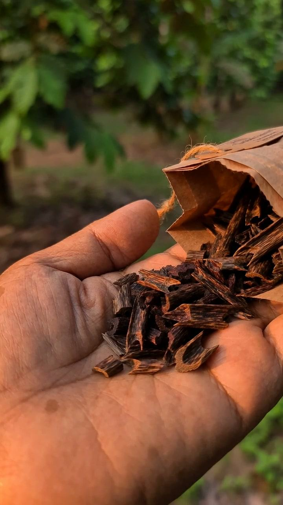

广西的沉香以白木香为主，钦州、玉林、北海等地都有种植。香韵清甜凉意，和广东料很接近，油脂细腻，颜色棕褐。
广西料的价格相对亲民，入门体验不错。买之前一样要看香韵、油脂、证书，产区名不是真假证明。
云南的沉香主要在南部，西双版纳、普洱等地，气候湿热，适合白木香生长。香韵清甜带凉，带一点山野的清爽感。
云南料的产量相对小，市场上流通的不多。遇到云南料，亲自闻过再决定，溯源说不清的先别买。
福建的沉香历史很久，漳州、莆田等地古代就有用香、制香的传统。现在福建的沉香以种植为主，产量相对小，香韵清甜。
福建料在市场上不多见，价格跨度也不小。买之前问清楚来源，亲自闻过再决定。
一是都是白木香种，香韵清甜凉意，属于惠安系。二是都在国内，溯源相对容易，链条短。三是都有种植基地，种植料是主流，来源合法、价格透明。
共同点之外，每个产区也有自己的细微差别。香韵的差别要亲自闻，文字说不清楚。
预算有限想入门，先看广西料：价格亲民，香韵清甜凉意，入门体验不错。喜欢清爽山野风格的，可以看看云南料。看重历史和传统制香的，可以了解福建料。
三个产区的料香韵接近，差别主要在细微之处。优先看哪个，不如说优先看哪块料：亲自闻过、溯源清楚、价格合理的，就是好选择。
第一，产区名不能当真假证明。证书只证明材质，不证明产地。溯源说不清的，先别买。
第二，国内产区的料也有品质参差，不要觉得“国产就一定好”或“国产就不如进口”。看具体那块料的香韵和油脂。
第三，亲自闻。清甜凉意是这三个产区的常见风格，闻着发闷、单一甜香、带化学味的，先别买。
| 产区 | 香韵 | 代表地区 | 特点 |
|---|---|---|---|
| 广西 | 清甜凉意 | 钦州、玉林、北海 | 风格接近广东料，价格亲民 |
| 云南 | 清甜带凉 | 西双版纳、普洱 | 产量相对小，带山野清爽感 |
| 福建 | 清甜 | 漳州、莆田 | 历史久，产量小 |